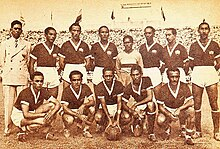

La selección de fútbol de Colombia es el equipo que representa a dicho país en las competiciones oficiales de fútbol masculino desde 1924. Su organización está a cargo de la Federación Colombiana de Fútbol y desde 1936 se encuentra afiliada tanto a la FIFA como a la Conmebol, de la cual es miembro asociado.
Historia

Selección Colombia en el Campeonato Suramericano de 1945.
En 1926, en el Estadio Moderno Julio Torres de Barranquilla, se realiza el primer encuentro internacional de Colombia. El partido entre una selección de Costa Rica y una selección de Colombia termina con los locales ganando cuatro goles por uno.